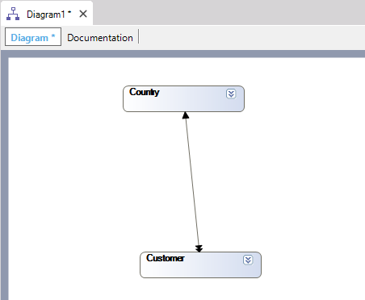

The Transaction objects generated by GeneXus carry out Referential Integrity controls. Suppose you define the following Transactions:
Country
{
CountryId*
CountryName
}
Customer
{
CustomerId*
CustomerName
CountryId
CountryName
}
In consequence, the following tables will be created in the database associated with the application: CUSTOMER (CustomerId, CustomerName, CustomerAddress, CustomerGender, CountryId) The fact that the CountryId attribute in the CUSTOMER table is a foreign key concerning the COUNTRY table establishes a relationship between both tables. You can see this relationship in this diagram:  The simple arrow means that in the table the arrow is pointing to there is an instance for every instance in the other table (this means that there is only one country for each customer). The double arrow means that in the table it is pointing there are several instances for every instance in the other table (this means that there are several customers for each country). The relation between the COUNTRY table and the CUSTOMER table is said to be 1 to N (1 to many). In GeneXus terminology, we say that there is a subordinate relationship between both tables. We say that:
Meaning that:
In other words:
|
| Backlinks | ||
| Toc:Business Component | Toc:GeneXus - Table of contents | Refcall rule |
| Refmsg Rule |